一. 黑马旅游网简介1. 项目介绍2. 技术选型Web层Service层3. 准备工作创建web项目及包结构引入相关依赖及插件引入项目配置文件引入项目会使用到的类引入静态页面创建数据库,导入数据4. 启动项目配置tomcat启动tomcat服务器访问页面二. 用户注册功能(一) 前端校验1. 引入Jquery校验查询2. 为各个校验项添加规则3. 编写JS调用校验的方法(二) 用户注册1. Web层2. 业务层接口UserService实现类UserServiceImpl3. 数据访问层接口UserDao实现类UserDaoImpl4. 接收响应的数据(三) 激活邮件1. 准备工作2. 需求分析3. 发送邮件4. 激活邮件WEB层业务层接口UserService实现类UserServiceImpl数据访问层接口UserDao实现类UserDaoImpl三. 用户登录功能(一) 登录功能1. 需求分析2. 代码实现发送异步请求WEB层(Servlet)业务层(Service)接口UserService实现类UserServiceImpl数据访问层(Dao)接口UserDao实现类UserDaoImpl处理响应数据(二) 用户信息展示1. 需求分析2. 代码实现发送异步请求WEB层(Servlet)展示登录用户信息(三) 退出登录1. 需求分析2. 代码实现修改页面退出按钮Web层(Servlet)四. 程序代码优化(一) 编写BaseServlet代码(二) 编写Servlet继承BaseServlet(三) 修改请求路径1. 用户注册2. 用户登录3. 用户激活4. 登录用户信息5. 退出登录五. 产品分类查询(一) 需求分析(二) 代码实现1. 发送异步请求2. WEB层(Servlet)3. 业务层(Service)接口CategoryService实现类CategoryServiceImpl4. 数据访问层(Dao)接口CategoryDao实现类CategoryDaoImpl5. 处理响应数据(三) 功能优化六. 线路分页查询(一) 需求分析(二) 功能修改1. 修改一2. 修改二(三) 代码实现1. 发送异步请求封装查询的方法页面加载完成获取需要查询的分类id,调用查询方法2. WEB层(Servlet)3. 业务层(Service)接口RouteService实现类RouteServiceImpl4. 数据访问层(Dao)接口实现类5. 处理响应数据七. 线路条件查询(一) 需求分析(二) 代码实现1. 发送异步请求2. WEB层(Servlet)3. 业务层(Service)接口RouteService实现类RouteServiceImpl4. 数据访问层(Dao)接口RouteDao实现类RouteDaoImpl八. 旅游线路详情(一) 功能分析(二) 代码实现1. 发送异步请求2. WEB层(Servlet)3. 业务层(Service)接口实现类4. 数据访问层(Dao)接口RouteDao实现类RouteDaoImpl接口RouteImgDao实现类RouteImgDaoImpl接口SellerDao实现类SellerDaoImpl5. 处理响应数据九旅游线路收藏(一) 需求分析(二) 判断是否已经收藏1. 发送异步请求2. WEB层(Servlet)3. 业务层(Service)接口FavoriteService实现类FavoriteServiceImpl4. 数据访问层(Dao)接口FavoriteDao实现类FavoriteDaoImpl5. 处理响应数据(三) 用户收藏1. 发送异步请求2. WEB层(Servlet)3. 业务层(Service)接口FavoriteService实现类FavoriteServiceImpl4. 数据访问层(Dao)接口FavoriteDao实现类FavoriteDaoImpl5. 处理响应数据
为了巩固web基础知识，提升综合运用能力，故而讲解此案例。要求，每位同学能够独立完成此案例
1. Servlet：前端控制器2. html：视图3. Filter：过滤器4. BeanUtils：数据封装5. Jackson：json序列化工具
xxxxxxxxxx6. Javamail：java发送邮件工具7. Redis：nosql内存数据库8. Jedis：java的redis客户端
###Dao层 9. Mysql：数据库 10. Druid：数据库连接池 11. JdbcTemplate：jdbc的工具
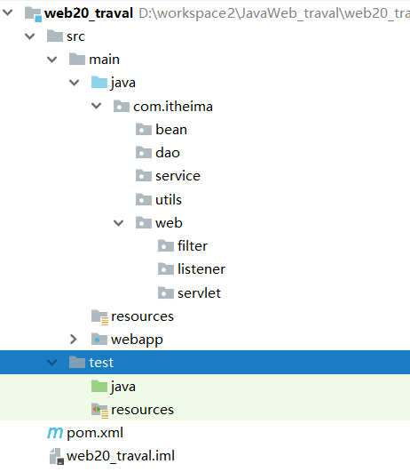
注意:补齐maven项目的各个目录
x <project xmlns="http://maven.apache.org/POM/4.0.0" xmlns:xsi="http://www.w3.org/2001/XMLSchema-instance" xsi:schemaLocation="http://maven.apache.org/POM/4.0.0 http://maven.apache.org/xsd/maven-4.0.0.xsd"> <modelVersion>4.0.0</modelVersion> <groupId>com.itheima</groupId> <artifactId>web20_traval</artifactId> <version>1.0-SNAPSHOT</version> <packaging>war</packaging> <name>web20_traval Maven Webapp</name> <!-- FIXME change it to the project's website --> <url>http://www.example.com</url> <properties> <project.build.sourceEncoding>UTF-8</project.build.sourceEncoding> <maven.compiler.source>1.9</maven.compiler.source> <maven.compiler.target>1.9</maven.compiler.target> </properties> <dependencies> <!--单元测试的jar包--> <dependency> <groupId>junit</groupId> <artifactId>junit</artifactId> <version>4.11</version> <scope>test</scope> </dependency> <!--tomcat9的jar包--> <dependency> <groupId>org.apache.tomcat</groupId> <artifactId>tomcat-catalina</artifactId> <version>7.0.47</version> <scope>provided</scope> </dependency> <!--springjdbc的jar包--> <dependency> <groupId>org.springframework</groupId> <artifactId>spring-jdbc</artifactId> <version>4.3.18.RELEASE</version> </dependency> <!--mysql数据库的驱动包--> <dependency> <groupId>mysql</groupId> <artifactId>mysql-connector-java</artifactId> <version>5.1.38</version> </dependency> <!--数据封装的jar包--> <dependency> <groupId>commons-beanutils</groupId> <artifactId>commons-beanutils</artifactId> <version>1.8.3</version> </dependency> <!--json转化的jar包--> <dependency> <groupId>com.fasterxml.jackson.core</groupId> <artifactId>jackson-databind</artifactId> <version>2.7.3</version> </dependency> <!--druid连接池的jar包--> <dependency> <groupId>com.alibaba</groupId> <artifactId>druid</artifactId> <version>1.1.10</version> </dependency> <!--Jedis的jar包--> <dependency> <groupId>redis.clients</groupId> <artifactId>jedis</artifactId> <version>2.9.0</version> </dependency> <!--java邮件客户端--> <dependency> <groupId>com.sun.mail</groupId> <artifactId>javax.mail</artifactId> <version>1.5.6</version> </dependency> <dependency> <groupId>javax.mail</groupId> <artifactId>javax.mail-api</artifactId> <version>1.5.6</version> </dependency> </dependencies> <build> <plugins> <plugin> <groupId>org.apache.tomcat.maven</groupId> <artifactId>tomcat7-maven-plugin</artifactId> <version>2.2</version> <configuration> <port>8080</port> <path>/web20</path> </configuration> </plugin> </plugins> </build></project>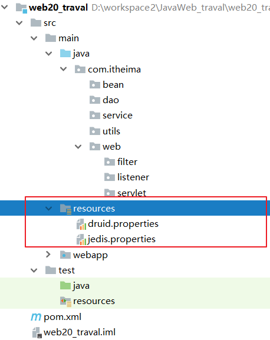
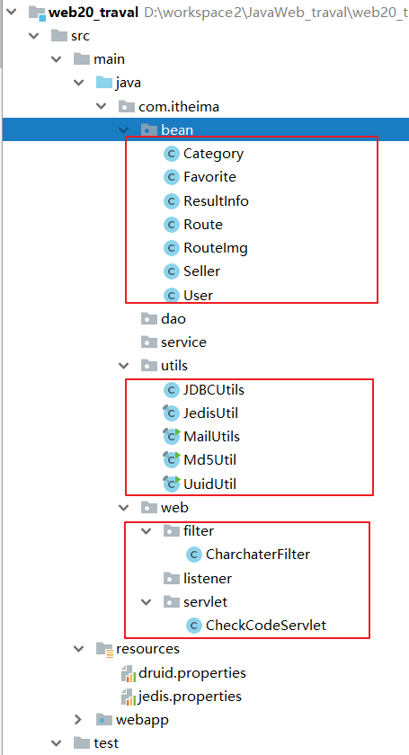
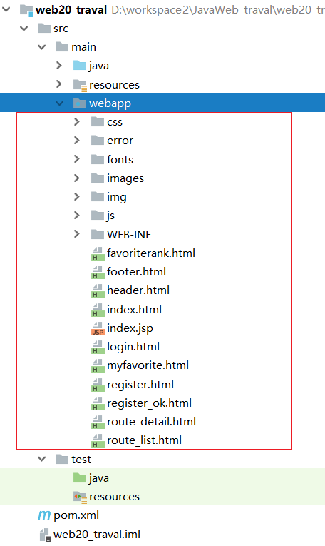
xxxxxxxxxx-- 创建数据库create database web20_traval character set utf8 ;-- 使用数据库use web20_traval;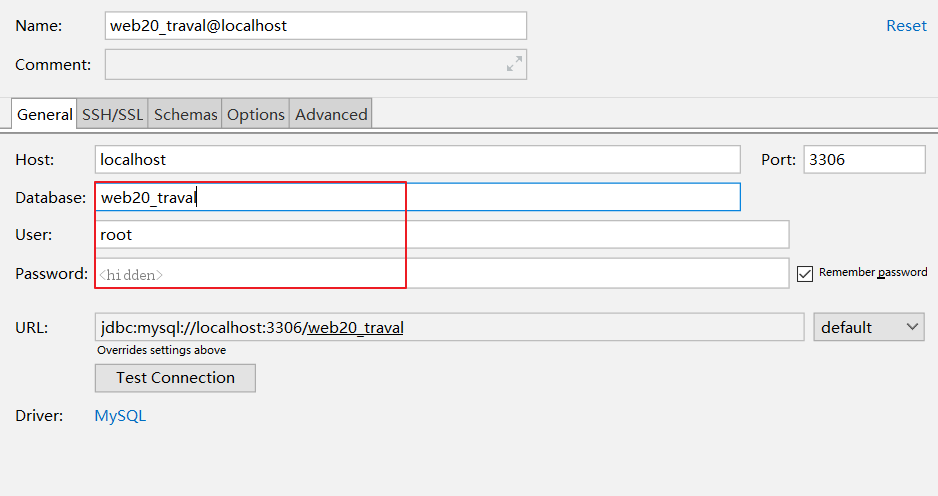
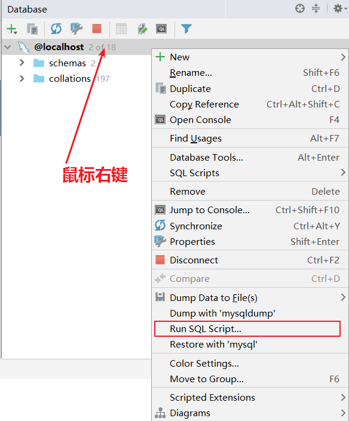
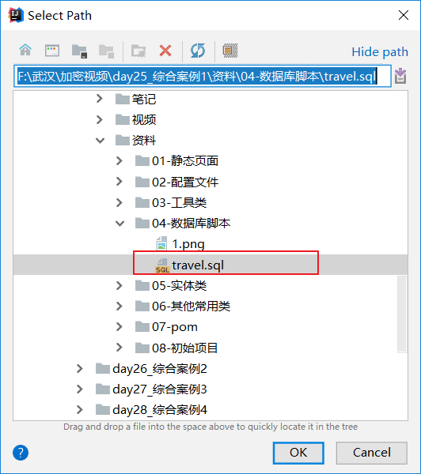
注意修改配置文件数据库的名称及用户名和密码
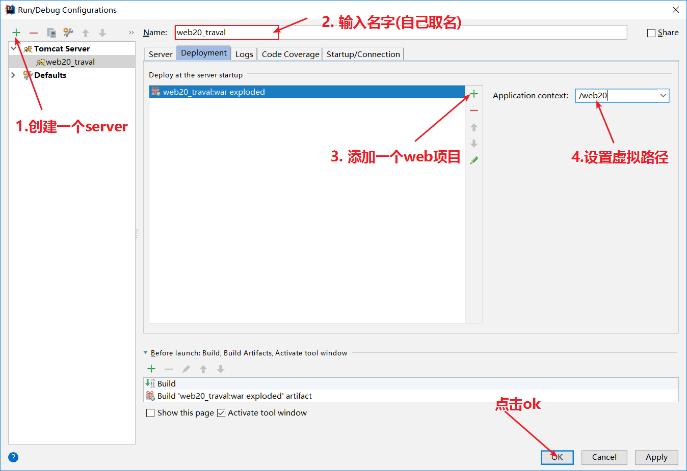
http://localhost:8080/web20/index.html
xxxxxxxxxx1. 用户名：单词字符，长度8到20位2. 密码：单词字符，长度8到20位3. email：邮件格式4. 姓名：非空5. 手机号：手机号格式6. 出生日期：非空7. 验证码：非空8. 校验通过提交表单
xxxxxxxxxx<form id="registerForm"><!--提交处理请求的标识符--><input type="hidden" name="action" value="register"> <table style="margin-top: 25px;"> <tr> <td class="td_left"> <label for="username">用户名</label> </td> <td class="td_right"> <input type="text" id="username" name="username" placeholder="请输入账号" validate='[{"type":"notNull","msg":"用户名不能为空！"},{"type":"regex","reg":"^[a-zA-Z0-9]{2,9}$","msg":"用户名必须是8-20位字母或数字组成"}]'> </td> </tr> <tr> <td class="td_left"> <label for="password">密码</label> </td> <td class="td_right"> <input type="text" id="password" name="password" placeholder="请输入密码" validate='[{"type":"notNull","msg":"用户名不能为空！"},{"type":"regex","reg":"^[a-zA-Z0-9]{2,9}$","msg":"用户名必须是8-20位字母或数字组成"}]'> </td> </tr> <tr> <td class="td_left"> <label for="email">Email</label> </td> <td class="td_right"> <input type="text" id="email" name="email" placeholder="请输入Email" validate='[{"type":"regex","reg":"^\\w+([-+.]\\w+)*@\\w+([-.]\\w+)*\\.\\w+([-.]\\w+)*$","msg":"邮箱格式不正确!"}]'> </td> </tr> <tr> <td class="td_left"> <label for="name">姓名</label> </td> <td class="td_right"> <input type="text" id="name" name="name" placeholder="请输入真实姓名" validate='[{"type":"notNull","msg":"姓名不能为空！"}]'> </td> </tr> <tr> <td class="td_left"> <label for="telephone">手机号</label> </td> <td class="td_right"> <input type="text" id="telephone" name="telephone" placeholder="请输入您的手机号" validate='[{"type":"regex","reg":"^(13[0-9]|14[579]|15[0-3,5-9]|16[6]|17[0135678]|18[0-9]|19[89])\\d{8}$","msg":"手机号格式不正确!"}]'> </td> </tr> <tr> <td class="td_left"> <label for="sex">性别</label> </td> <td class="td_right gender"> <input type="radio" id="sex" name="sex" value="男" checked> 男 <input type="radio" name="sex" value="女"> 女 </td> </tr> <tr> <td class="td_left"> <label for="birthday">出生日期</label> </td> <td class="td_right"> <input type="date" id="birthday" name="birthday" placeholder="年/月/日" validate='[{"type":"notNull","msg":"请选择出生日期"}]'> </td> </tr> <tr> <td class="td_left"> <label for="check">验证码</label> </td> <td class="td_right check"> <input type="text" id="check" name="check" class="check" validate='[{"type":"notNull","msg":"验证码不能为空"}]'> <img src="checkCode" height="32px" alt="" onclick="changeCheckCode(this)"> </td> </tr> <tr> <td class="td_left"> </td> <td class="td_right check"> <input type="submit" class="submit" value="注册"> <span id="errorMsg" style="color: red;"></span> </td> </tr> </table></form>xxxxxxxxxx<script src="js/jquery-3.3.1.js"></script><script src="js/jquery.validate.js"></script><script> $(function () { //表单校验 $("#registerForm").validate(function () { var url = "registUserServlet"; var params = $("#registerForm").serialize(); $.post(url, params, function (data) { //处理服务器响应的数据 data {flag:true,errorMsg:"注册失败"} if (data.flag) { //注册成功，跳转成功页面 location.href = "register_ok.html"; } else { //注册失败,给errorMsg添加提示信息 $("#errorMsg").html(data.errorMsg); } },'json'); }); });</script>
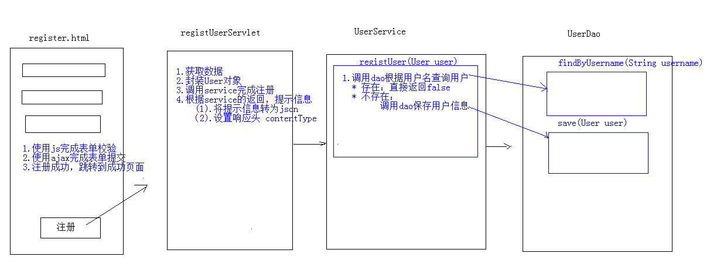
xxxxxxxxxx("/registUserServlet")public class RegistUserServlet extends HttpServlet { protected void doPost(HttpServletRequest request, HttpServletResponse response) throws ServletException, IOException { //1. 验证码校验 String check = request.getParameter("check"); //从sesion中获取验证码 HttpSession session = request.getSession(); String checkcode_server = (String) session.getAttribute("CHECKCODE_SERVER"); session.removeAttribute("CHECKCODE_SERVER");//为了保证验证码只能使用一次 //比较 if(checkcode_server == null || !checkcode_server.equalsIgnoreCase(check)){ //验证码错误 ResultInfo info = new ResultInfo(); //注册失败 info.setFlag(false); info.setErrorMsg("验证码错误"); //将info对象序列化为json ObjectMapper mapper = new ObjectMapper(); String json = mapper.writeValueAsString(info); response.getWriter().write(json); return; } //2. 验证码校验通过,完成组成操作 //2.1.获取数据 Map<String, String[]> map = request.getParameterMap(); //2.2.封装对象 User user = new User(); try { BeanUtils.populate(user,map); } catch (IllegalAccessException e) { e.printStackTrace(); } catch (InvocationTargetException e) { e.printStackTrace(); } //2.3.调用service完成注册 UserService service = new UserServiceImpl(); boolean flag = service.regist(user); ResultInfo info = new ResultInfo(); //4.响应结果 if(flag){ //注册成功 info.setFlag(true); }else{ //注册失败 info.setFlag(false); info.setErrorMsg("注册失败!"); } //3. 将info对象序列化为json ObjectMapper mapper = new ObjectMapper(); String json = mapper.writeValueAsString(info); //4. 将json数据写回客户端 response.getWriter().write(json); }}UserServicexxxxxxxxxx/** * 用户注册操作 * @param user 封装用户注册数据 * @return true:注册成功 false:注册失败 */boolean regist(User user);UserServiceImplxxxxxxxxxxprivate UserDao userDao = new UserDaoImpl();public boolean regist(User user) { //1.根据用户名查询用户对象 User u = userDao.findByUsername(user.getUsername()); //判断u是否为null if(u != null){ //用户名存在，注册失败 return false; } //2.保存用户信息 userDao.save(user); return true;}UserDaoxxxxxxxxxx/** * 根据用户名查询用户 * @param username 用户名 * @return 用户对象 */User findByUsername(String username);/** * 保存用户到数据库 * @param user */void save(User user);UserDaoImplxxxxxxxxxxprivate JdbcTemplate template = new JdbcTemplate(JDBCUtils.getDataSource());public User findByUsername(String username) { try { //1.定义sql String sql = "select * from tab_user where username = ?"; //2.执行sql User user = template.queryForObject(sql, new BeanPropertyRowMapper<User>(User.class), username); return user; } catch (Exception e) { return null; }}public void save(User user) { //1.定义sql String sql = "insert into tab_user(username,password,name,birthday,sex,telephone,email) values(?,?,?,?,?,?,?)"; //2.执行sql template.update(sql,user.getUsername(),user.getPassword(),user.getName(),user.getBirthday(),user.getSex(),user.getTelephone(),user.getEmail());}xxxxxxxxxx$(function () { //表单校验 $("#registerForm").validate(function () { var url = "registUserServlet"; //序列化表单数据 username=aaa&password=123... var params = $(this).serialize(); $.post(url, params, function (data) { //处理服务器响应的数据 data {flag:true,errorMsg:"注册失败"} //-------------------------------------- if (data.flag) { //注册成功，跳转成功页面 location.href = "register_ok.html"; } else { //注册失败,给errorMsg添加提示信息 $("#errorMsg").html(data.errorMsg); } //-------------------------------------- },'json'); });});为什么要进行邮件激活？为了保证用户填写的邮箱是正确的。将来可以推广一些宣传信息，到用户邮箱中
xxxxxxxxxx1. 申请邮箱2. 开启授权码3. 在MailUtils中设置自己的邮箱账号和密码(授权码)4. 引入邮件工具类：MailUtils，调用其中sendMail方法可以完成邮件发送
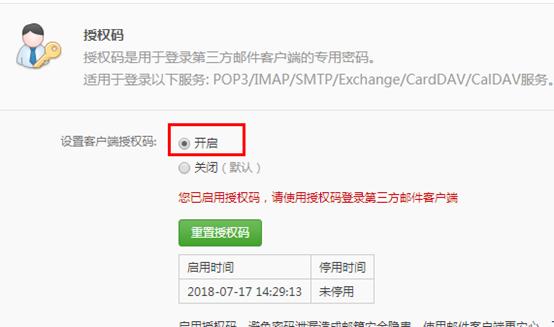
经过分析，发现，用户激活其实就是修改用户表中的status为‘Y’
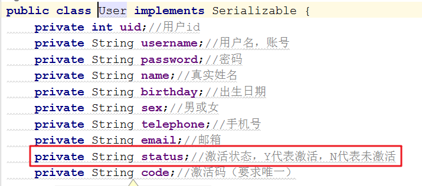
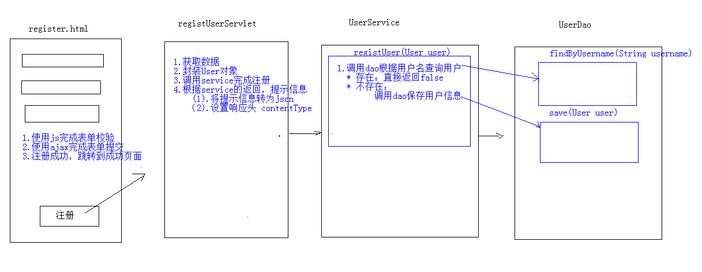
1. 修改业务层代码 , 用户注册成功之后添加发送邮件的代码
xxxxxxxxxx1. 生成激活码2. 设置激活状态3. 保存用户4. 定义邮件内容(带激活码)5. 发送邮件
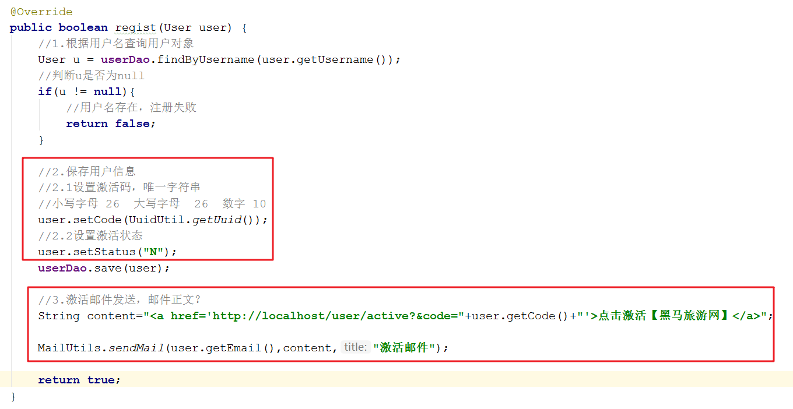
2. 修改保存Dao代码，加上存储status和code 的代码逻辑
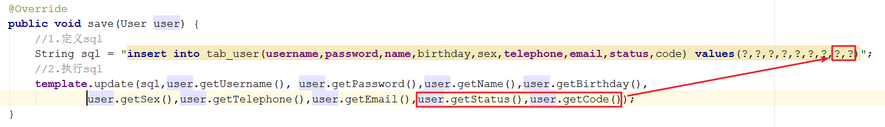
xxxxxxxxxx("/activeUserServlet")public class ActiveUserServlet extends HttpServlet { protected void doPost(HttpServletRequest request, HttpServletResponse response) throws ServletException, IOException { //1.获取激活码 String code = request.getParameter("code"); if(code != null){ //2.调用service完成激活 UserService service = new UserServiceImpl(); boolean flag = service.active(code); //3.判断标记 String msg = null; if(flag){ //激活成功 msg = "激活成功，请<a href='login.html'>登录</a>"; }else{ //激活失败 msg = "激活失败，请联系管理员!"; } response.setContentType("text/html;charset=utf-8"); response.getWriter().write(msg); } }}UserServicexxxxxxxxxx/*** 激活邮件* @param code 激活码* @return*/boolean active(String code);UserServiceImplxxxxxxxxxxpublic boolean active(String code) { //1.根据激活码查询用户对象 int row = userDao.updateStatus(code,"Y"); if(row > 0){ return true; }else{ return false; }}UserDaoxxxxxxxxxx/** * 更新用户状态 * @param code 需要更新状态的用户 * @param status 激活状态 N 未激活 Y 激活 * @return */int updateStatus( String code,String status);UserDaoImplxxxxxxxxxxpublic int updateStatus(String code, String status) { String sql = " update tab_user set status = ? where code = ? "; int row = template.update(sql, status, code); return row;}
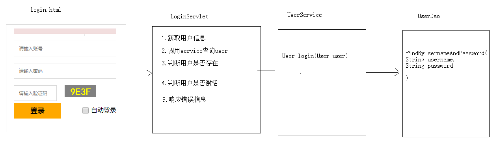
xxxxxxxxxx<script src="js/jquery-3.3.1.js"></script><script> $(function () { //1.给登录按钮绑定单击事件 $("#btn_sub").click(function () { //2.发送ajax请求，提交表单数据 var url = "loginServlet"; var params = $("#loginForm").serialize(); $.post(url, params, function (data) { //3.处理响应结果 },'json'); }); }); //图片点击事件 function changeCheckCode(img) { img.src = "checkCode?" + new Date().getTime(); } </script>xxxxxxxxxx("/loginServlet")public class LoginServlet extends HttpServlet { protected void doPost(HttpServletRequest request, HttpServletResponse response) throws ServletException, IOException { ResultInfo info = new ResultInfo(); ObjectMapper mapper = new ObjectMapper(); //1. 验证码校验 String check = request.getParameter("check"); //从sesion中获取验证码 HttpSession session = request.getSession(); String checkcode_server = (String) session.getAttribute("CHECKCODE_SERVER"); session.removeAttribute("CHECKCODE_SERVER");//为了保证验证码只能使用一次 //比较验证码, 验证码错误 if(checkcode_server == null || !checkcode_server.equalsIgnoreCase(check)){ //保存错误信息 info.setFlag(false); info.setErrorMsg("验证码错误"); //将info对象序列化为json mapper.writeValue(response.getOutputStream(), info); return; } //用户登录 //2.1 获取用户名和密码数据 Map<String, String[]> map = request.getParameterMap(); //2.2.封装User对象 User user = new User(); try { BeanUtils.populate(user, map); } catch (IllegalAccessException e) { e.printStackTrace(); } catch (InvocationTargetException e) { e.printStackTrace(); } //2.3.调用Service查询 UserService service = new UserServiceImpl(); User u = service.login(user); //2.4.判断用户对象是否为null if (u == null) { //用户名密码或错误 info.setFlag(false); info.setErrorMsg("用户名密码或错误"); //将info对象序列化为json mapper.writeValue(response.getOutputStream(), info); return ; } //5.判断用户是否激活 if (u != null && !"Y".equals(u.getStatus())) { //用户尚未激活 info.setFlag(false); info.setErrorMsg("您尚未激活，请激活"); //将info对象序列化为json mapper.writeValue(response.getOutputStream(), info); return ; } //6.判断登录成功 if (u != null && "Y".equals(u.getStatus())) { request.getSession().setAttribute("user", u);//登录成功标记 //登录成功 info.setFlag(true); mapper.writeValue(response.getOutputStream(), info); return ; } }}UserServicexxxxxxxxxx/** * 用户登录功能 * @param user * @return */public User login(User user) ;UserServiceImplxxxxxxxxxxpublic User login(User user) { return userDao.findByUsernameAndPassword(user.getUsername(),user.getPassword());}UserDaoxxxxxxxxxx/** * 根据用户名或密码查询用户 * @param username * @param password * @return */User findByUsernameAndPassword(String username, String password);UserDaoImplxxxxxxxxxxpublic User findByUsernameAndPassword(String username, String password) { try { //1.定义sql String sql = "select * from tab_user where username = ? and password = ?"; //2.执行sql User user = template.queryForObject(sql, new BeanPropertyRowMapper<User>(User.class), username,password); return user ; } catch (Exception e) { return null; }}xxxxxxxxxx$(function () { //1.给登录按钮绑定单击事件 $("#btn_sub").click(function () { //2.发送ajax请求，提交表单数据 var url = "loginServlet"; var params = $("#loginForm").serialize(); $.post(url, params, function (data) { //3.处理响应结果 //----------------------------- //data : {flag:false,errorMsg:''} if (data.flag) { //登录成功 location.href = "index.html"; } else { //登录失败 $("#errorMsg").html(data.errorMsg); } //----------------------------- },'json'); });});展示用户信息,登录成功跳转首页(index.html)展示用户姓名
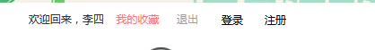
修改==header.html==页面发送异步请求,获取登录用户信息
xxxxxxxxxx<script> $(function () { var url = "findUserServlet"; $.get(url,function (data) { //展示登录用户信息 },'json'); });</script>编写Servlet , 接收用户请求,获取登录用户信息
xxxxxxxxxx("/findUserServlet")public class FindUserServlet extends HttpServlet { protected void doPost(HttpServletRequest request, HttpServletResponse response) throws ServletException, IOException { //从session中获取登录用户 Object user = request.getSession().getAttribute("user"); ResultInfo info = new ResultInfo(); //将user写回客户端 if(user==null){ info.setFlag(false); //未登录 }else{ info.setFlag(true); //已经登录 info.setData(user); } response.setContentType("application/json;charset=utf-8"); mapper.writeValue(response.getOutputStream(),info); }}xxxxxxxxxx<script> $(function () { var url = "findUserServlet"; $.get(url,function (data) { // 用户已经登录 {flag:true,data:{name=xxx}} // 用户没有登录{flag:false,data:null,msg:null} if(data.flag){ //true $(".shortcut .login").show(); $(".shortcut .login_out").hide(); var msg = "欢迎回来，"+data.data.name; $("#span_username").html(msg); }else{ //false $(".shortcut .login").hide(); $(".shortcut .login_out").show(); } },'json'); });</script>
xxxxxxxxxx什么叫做登录了？session中有user对象。所以,退出登录实际上就是将session中的user对象销毁1. 访问servlet，将session销毁2. 跳转到登录页面
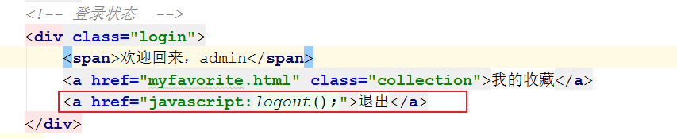
xxxxxxxxxxfunction logout() { window.location.href = "logoutServlet" ;}编写Servlet , 接收用户请求,销毁session , 用户退出登录后跳转到登录页面
xxxxxxxxxx("/logoutServlet")public class LogoutServlet extends HttpServlet { protected void doPost(HttpServletRequest request, HttpServletResponse response) throws ServletException, IOException { //1.销毁session request.getSession().invalidate(); //2.跳转登录页面 response.sendRedirect(request.getContextPath()+"/login.html"); }}xxxxxxxxxxpublic class BaseServlet extends HttpServlet { protected void service(HttpServletRequest req, HttpServletResponse resp) throws ServletException, IOException { //1. 获取用户要执行的方法名称 //1.1获取请求路径 String uri = req.getRequestURI(); // /travel/user/add //1.2 获取需要调用的方法 String methodName = uri.substring(uri.lastIndexOf('/') + 1); //2. 获取对应名称的方法对象 try { Class<? extends BaseServlet> clzz = this.getClass(); Method method = clzz.getDeclaredMethod(methodName, HttpServletRequest.class, HttpServletResponse.class); //3. 执行方法 method.setAccessible(true); method.invoke(this,req,resp); } catch (Exception e) { e.printStackTrace(); } } /** * 直接将传入的对象序列化为json，并且写回客户端 * @param obj */ public void writeValue(Object obj,HttpServletResponse response) throws IOException { ObjectMapper mapper = new ObjectMapper(); response.setContentType("application/json;charset=utf-8"); mapper.writeValue(response.getOutputStream(),obj); } /** * 将传入的对象序列化为json，返回 * @param obj * @return */ public String writeValueAsString(Object obj) throws JsonProcessingException { ObjectMapper mapper = new ObjectMapper(); return mapper.writeValueAsString(obj); }}xxxxxxxxxx("/user/*")public class UserServlet extends BaseServlet { /** * 用户登录 * @param request * @param response * @throws ServletException * @throws IOException */ private void login(HttpServletRequest request, HttpServletResponse response) throws ServletException, IOException { ResultInfo info = new ResultInfo(); ObjectMapper mapper = new ObjectMapper(); //1. 验证码校验 String check = request.getParameter("check"); //从sesion中获取验证码 HttpSession session = request.getSession(); String checkcode_server = (String) session.getAttribute("CHECKCODE_SERVER"); session.removeAttribute("CHECKCODE_SERVER");//为了保证验证码只能使用一次 //比较验证码, 验证码错误 if (checkcode_server == null || !checkcode_server.equalsIgnoreCase(check)) { //保存错误信息 info.setFlag(false); info.setErrorMsg("验证码错误"); //将info对象序列化为json mapper.writeValue(response.getOutputStream(), info); return; } //用户登录 //2.1 获取用户名和密码数据 Map<String, String[]> map = request.getParameterMap(); //2.2.封装User对象 User user = new User(); try { BeanUtils.populate(user, map); } catch (IllegalAccessException e) { e.printStackTrace(); } catch (InvocationTargetException e) { e.printStackTrace(); } //2.3.调用Service查询 UserService service = new UserServiceImpl(); User u = service.login(user); //2.4.判断用户对象是否为null if (u == null) { //用户名密码或错误 info.setFlag(false); info.setErrorMsg("用户名密码或错误"); //将info对象序列化为json mapper.writeValue(response.getOutputStream(), info); return; } //5.判断用户是否激活 if (u != null && !"Y".equals(u.getStatus())) { //用户尚未激活 info.setFlag(false); info.setErrorMsg("您尚未激活，请激活"); //将info对象序列化为json mapper.writeValue(response.getOutputStream(), info); return; } //6.判断登录成功 request.getSession().setAttribute("user", u);//登录成功标记 //登录成功 info.setFlag(true); mapper.writeValue(response.getOutputStream(), info); } }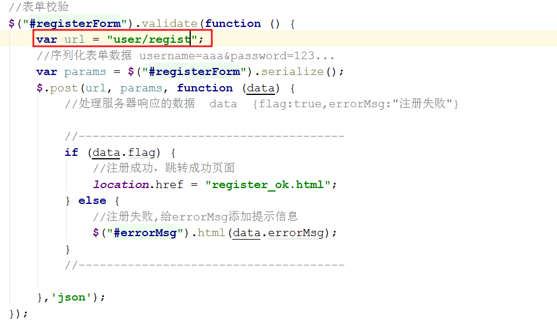
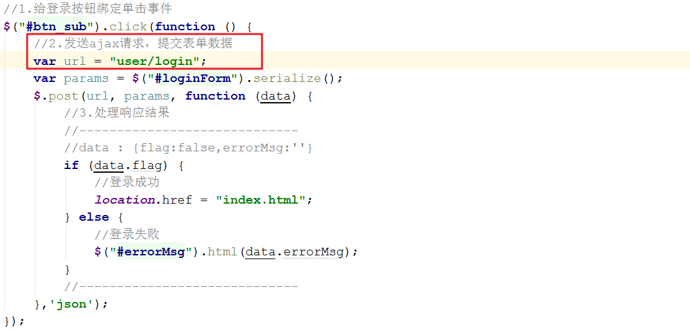
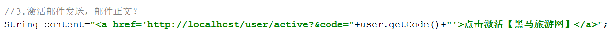
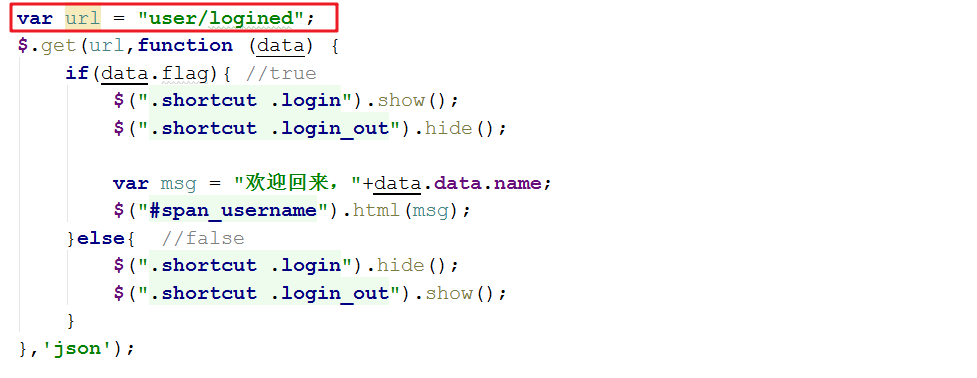
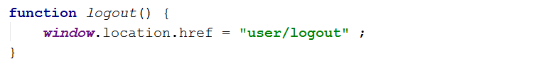
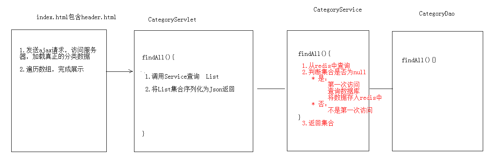
修改==header.html==页面 , 页面加载完成发送异步请求
xxxxxxxxxx//查询分类数据var url = "category/findAll";$.get(url,function (data) { //回调函数,接收响应数据});编写Servlet , 接收用户请求,调用业务层完成业务逻辑处理
xxxxxxxxxx("/category/*")public class CategoryServlet extends BaseServlet { private CategoryService service = new CategoryServiceImpl(); /** * 查询所有 * @param request * @param response * @throws ServletException * @throws IOException */ public void findAll(HttpServletRequest request, HttpServletResponse response) throws ServletException, IOException { //1.调用service查询所有 List<Category> cs = service.findAll(); //2.序列化json返回 writeValue(cs,response); }}CategoryServicexxxxxxxxxxpublic interface CategoryService { public List<Category> findAll();}CategoryServiceImplxxxxxxxxxxpublic class CategoryServiceImpl implements CategoryService { private CategoryDao categoryDao = new CategoryDaoImpl(); public List<Category> findAll() { return categoryDao.findAll(); }}CategoryDaoxxxxxxxxxxpublic interface CategoryDao { /** * 查询所有 * @return */ public List<Category> findAll();}CategoryDaoImplxxxxxxxxxxpublic class CategoryDaoImpl implements CategoryDao { private JdbcTemplate template = new JdbcTemplate(JDBCUtils.getDataSource()); public List<Category> findAll() { String sql = "select * from tab_category "; return template.query(sql,new BeanPropertyRowMapper<Category>(Category.class)); }}xxxxxxxxxx//查询分类数据var url = "category/findAll";$.get(url,function (data) { //回调函数,接收响应数据 //--------------------------------------- //[{cid:1,cname:国内游},{},{}] var lis = '<li class="nav-active"><a href="index.html">首页</a></li>'; //遍历数组,拼接字符串(<li>) for (var i = 0; i < data.length; i++) { lis += '<li><a href="route_list.html?cid='+data[i].cid+'">'+data[i].cname+'</a></li>'; } //拼接收藏排行榜的li,<li><a href="favoriterank.html">收藏排行榜</a></li> lis+= '<li><a href="favoriterank.html">收藏排行榜</a></li>'; //将lis字符串，设置到ul的html内容中 $("#category").html(lis); //------------------------------------------});分类信息 , 一般情况下很少发生改变 , 像这一类的经常查询 , 很少改变的数据, 可以保存在缓存中 ,提高程序的查询性能
修改CategoryServiceImpl
xxxxxxxxxxpublic List<Category> findAll() { //1.从redis中查询 //1.1获取jedis客户端 Jedis jedis = JedisUtil.getJedis(); //1.2可使用sortedset排序查询 Set<String> categorys = jedis.zrange("category", 0, -1); List<Category> cs = null; //2.判断查询的集合是否为空 if (categorys == null || categorys.size() == 0) { System.out.println("从数据库查询...."); //3.如果为空,需要从数据库查询,在将数据存入redis //3.1 从数据库查询 cs = categoryDao.findAll(); //3.2 将集合数据存储到redis中的 category的key for (int i = 0; i < cs.size(); i++) { jedis.zadd("category", cs.get(i).getCid(), cs.get(i).getCname()); } } else { //4.如果不为空,将set的数据存入list cs = new ArrayList<Category>(); for (String str : categorys) { Category category = new Category(); category.setCname(str); cs.add(category); } } return cs;}
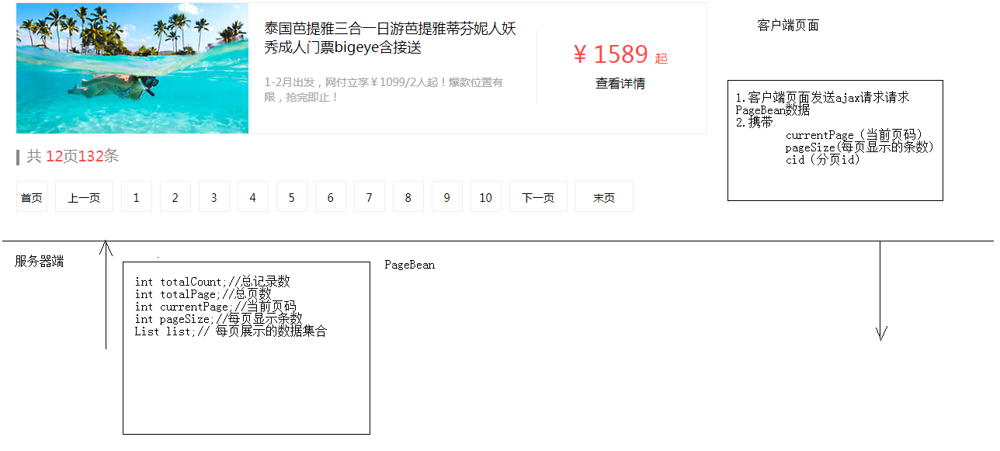
因为点击分类,需要展示分类下的所有旅游线路,所以需要对之前的分类查询功能略作修改
分类查询功能业务层返回的数据中应该带有分类的id , 因为要根据分类查询某一个分类下的旅游线路信息
修改 CategoryServiceImpl
xxxxxxxxxxpublic List<Category> findAll() { //1.从redis中查询 //1.1获取jedis客户端 Jedis jedis = JedisUtil.getJedis(); //1.2可使用sortedset排序查询 //Set<String> categorys = jedis.zrange("category", 0, -1); //------------------------------------------------- //1.3查询sortedset中的分数(cid)和值(cname) Set<Tuple> categorys = jedis.zrangeWithScores("category", 0, -1); //------------------------------------------------- List<Category> cs = null; //2.判断查询的集合是否为空 if (categorys == null || categorys.size() == 0) { System.out.println("从数据库查询...."); //3.如果为空,需要从数据库查询,在将数据存入redis //3.1 从数据库查询 cs = categoryDao.findAll(); //3.2 将集合数据存储到redis中的 category的key for (int i = 0; i < cs.size(); i++) { jedis.zadd("category", cs.get(i).getCid(), cs.get(i).getCname()); } } else { System.out.println("从redis中查询....."); //4.如果不为空,将set的数据存入list cs = new ArrayList<Category>(); //------------------------------------- for (Tuple tuple : categorys) { Category category = new Category(); category.setCname(tuple.getElement()); category.setCid((int)tuple.getScore()); cs.add(category); } //------------------------------------- } return cs;}分类查询功能 ,展示分类信息时 , 添加分类列表的链接路径
header.html, 注意后面需要携带 分类cid参数
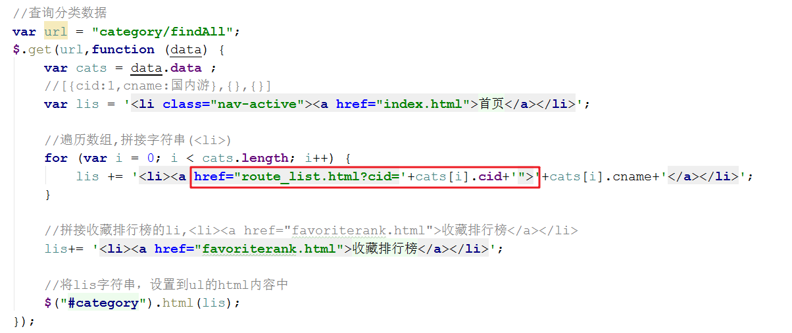
xxxxxxxxxxfunction load(cid ,currentPage){ //发送ajax请求，请求route/pageRoute,传递cid var url = "/web20/route/pageRoute"; var params = {cid:cid,currentPage:currentPage}; $.get(url,params,function (data) { //回调函数,处理响应数据 //1. 分页数据展示 //2. 分页条码展示 },'json');}xxxxxxxxxx$(function () { //获取?后面的字符串 var search = location.search; //alert(search);//?id=5 // 切割字符串，拿到第二个值 var cid = search.split("=")[1]; // 发送异步请求,获取分类数据 load(cid,1);});编写Servlet , 接收用户请求,调用业务层处理数据
xxxxxxxxxx("/route/*")public class RouteServlet extends BaseServlet { private RouteService routeService = new RouteServiceImpl(); /** * 分页查询 * @param request * @param response * @throws ServletException * @throws IOException */ public void pageRoute(HttpServletRequest request, HttpServletResponse response) throws ServletException, IOException { //1.接受参数 String currentPageStr = request.getParameter("currentPage"); String pageSizeStr = request.getParameter("pageSize"); String cidStr = request.getParameter("cid"); int cid = 0;//类别id //2.处理参数 if(cidStr != null && cidStr.length() > 0){ cid = Integer.parseInt(cidStr); } int currentPage = 0;//当前页码，如果不传递，则默认为第一页 if(currentPageStr != null && currentPageStr.length() > 0){ currentPage = Integer.parseInt(currentPageStr); }else{ currentPage = 1; } int pageSize = 0;//每页显示条数，如果不传递，默认每页显示5条记录 if(pageSizeStr != null && pageSizeStr.length() > 0){ pageSize = Integer.parseInt(pageSizeStr); }else{ pageSize = 5; } //3. 调用service查询PageBean对象 PageBean<Route> pb = routeService.pageRoute(cid, currentPage, pageSize); //4. 封装返回数据 ResultInfo resultInfo = new ResultInfo(true,pb); //5. 将数据写回到客户端 writeValue(resultInfo) }}RouteServicexxxxxxxxxx/** * 根据类别进行分页查询 * @param cid * @param currentPage * @param pageSize * @return */public PageBean<Route> pageRoute(int cid, int currentPage, int pageSize);RouteServiceImplxxxxxxxxxxpublic class RouteServiceImpl implements RouteService { private RouteDao routeDao = new RouteDaoImpl(); public PageBean<Route> pageRoute(int cid, int currentPage, int pageSize) { //封装PageBean PageBean<Route> pb = new PageBean<Route>(); //设置当前页码 pb.setCurrentPage(currentPage); //设置每页显示条数 pb.setPageSize(pageSize); //设置总记录数 int totalCount = routeDao.findTotalCount(cid); pb.setTotalCount(totalCount); //设置当前页显示的数据集合 int start = (currentPage - 1) * pageSize;//开始的记录数 List<Route> list = routeDao.findByPage(cid, start, pageSize); pb.setList(list); //设置总页数 = 总记录数/每页显示条数 int totalPage = totalCount % pageSize == 0 ? totalCount / pageSize : (totalCount / pageSize) + 1; pb.setTotalPage(totalPage); return pb; }}xxxxxxxxxxpublic interface RouteDao { /** * 根据cid查询总记录数 */ public int findTotalCount(int cid); /** * 根据cid，start,pageSize查询当前页的数据集合 */ public List<Route> findByPage(int cid, int start, int pageSize);}xxxxxxxxxxpublic class RouteDaoImpl implements RouteDao { private JdbcTemplate template = new JdbcTemplate(JDBCUtils.getDataSource()); public int findTotalCount(int cid) { String sql = "select count(*) from tab_route where cid = ?"; return template.queryForObject(sql,Integer.class,cid); } public List<Route> findByPage(int cid, int start, int pageSize) { String sql = "select * from tab_route where cid = ? limit ? , ?"; return template.query(sql,new BeanPropertyRowMapper<Route>(Route.class),cid,start,pageSize); }}引入分页插件
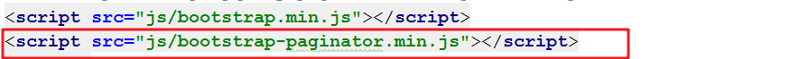
提供分页条的展示区域
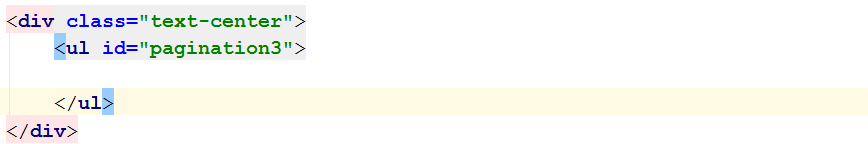
分页展示旅游线路信息
xxxxxxxxxxfunction load(cid ,currentPage){ //发送ajax请求，请求route/pageRoute,传递cid var url = "/web20/route/pageRoute"; var params = {cid:cid,currentPage:currentPage}; $.get(url,params,function (data) { var pb = data.data ; //解析pagebean数据，展示到页面上 //1.分页工具条数据展示 //1.1 展示总页码和总记录数 $("#totalPage").html(pb.totalPage); $("#totalCount").html(pb.totalCount); //2.列表数据展示 var route_lis = ""; for (var i = 0; i < pb.list.length; i++) { //获取{rid:1,rname:"xxx"} var route = pb.list[i]; route_lis += '<li><div class="img"><img src="'+route.rimage+'" style="width: 299px;"></div><div class="text1"><p>'+route.rname+'</p><br/><p>'+route.routeIntroduce+'</p></div><div class="price"><p class="price_num"><span>¥</span><span>'+route.price+'</span><span>起</span></p><p><a href="route_detail.html">查看详情</a></p></div></li>'; } $("#route").html(route_lis); $("#pagination3").pagination({ currentPage: pb.currentPage, totalPage: pb.totalPage, isShow: true, count: 10, homePageText: "首页", endPageText: "尾页", prevPageText: "上一页", nextPageText: "下一页", callback: function(current) { load(cid,current); } }); //定位到页面顶部 window.scrollTo(0,0); },'json');}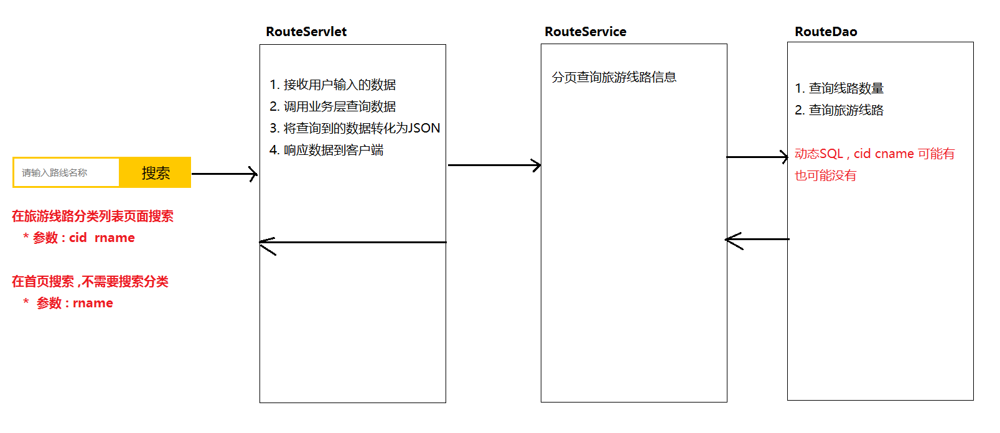
搜索按钮绑定事件
xxxxxxxxxx//根据传递过来的参数name获取对应的值function getParameter(name) { var reg = new RegExp("(^|&)" + name + "=([^&]*)(&|$)","i"); var r = location.search.substr(1).match(reg); if (r!=null){ return (r[2]); } return null;}//给搜索按钮绑定单击事件，获取搜索输入框的内容$("#search-button").click(function () { //线路名称 var rname = $("#search_input").val(); //获取分类id var cid = getParameter("cid"); // 跳转路径 http://localhost/route_list.html?cid=5，拼接上rname=xxx location.href="http://localhost/route_list.html?cid="+cid+"&rname="+rname;});将用户输入的数据,以参数的形式发送到服务器
xxxxxxxxxx<script src="js/jquery-3.3.1.js"></script><script src="js/getParameter.js"></script><script src="js/jquery.pagination.min.js"></script><script> $(function () { //获取cid的参数值 var cid = getParameter("cid"); //获取rname的参数值 var rname = getParameter("rname"); //判断rname如果不为null或者"" if(rname){ rname = window.decodeURIComponent(rname); //url解码 } //当页码加载完成后，调用load方法，发送ajax请求加载数据 load(cid,1,rname); }); function load(cid ,currentPage,rname){ //发送ajax请求，请求route/pageRoute,传递cid var url = "route/pageRoute"; var params = {cid:cid,currentPage:currentPage,rname:rname}; $.get(url,params,function (data) { var pb = data.data ; //解析pagebean数据，展示到页面上 //1.分页工具条数据展示 //1.1 展示总页码和总记录数 $("#totalPage").html(pb.totalPage); $("#totalCount").html(pb.totalCount); //2.列表数据展示 var route_lis = ""; for (var i = 0; i < pb.list.length; i++) { //获取{rid:1,rname:"xxx"} var route = pb.list[i]; route_lis += '<li><div class="img"><img src="'+route.rimage+'" style="width: 299px;"></div><div class="text1"><p>'+route.rname+'</p><br/><p>'+route.routeIntroduce+'</p></div><div class="price"><p class="price_num"><span>¥</span><span>'+route.price+'</span><span>起</span></p><p><a href="route_detail.html">查看详情</a></p></div></li>'; } $("#route").html(route_lis); $("#pagination3").pagination({ currentPage: pb.currentPage, totalPage: pb.totalPage, isShow: true, count: 10, homePageText: "首页", endPageText: "尾页", prevPageText: "上一页", nextPageText: "下一页", callback: function(current) { load(cid,current,rname); } }); //定位到页面顶部 window.scrollTo(0,0); },'json'); }</script>修改Servlet , 接收用户请求,调用业务层处理数据
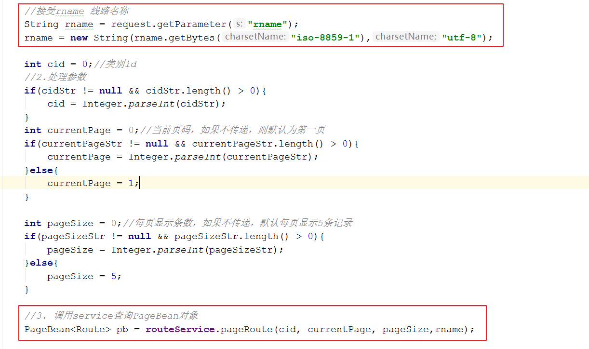
注意 : GET请求方式 , 发送中文数据 ,Tomcat7及以下版本会有中文乱码问题 , 需要解决中文乱码问题
完成分页查询业务逻辑处理
RouteService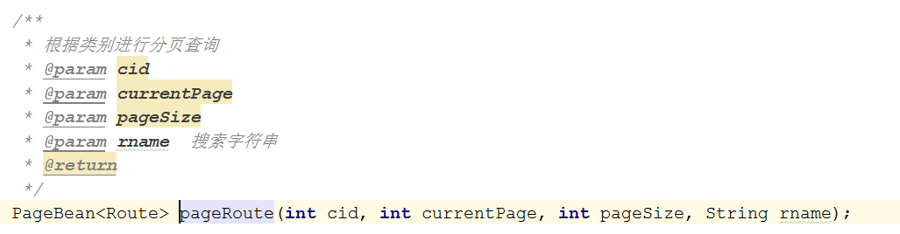
RouteServiceImpl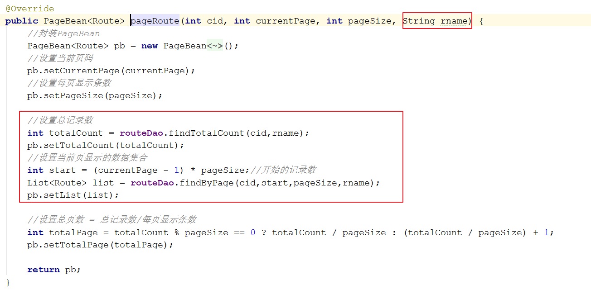
RouteDao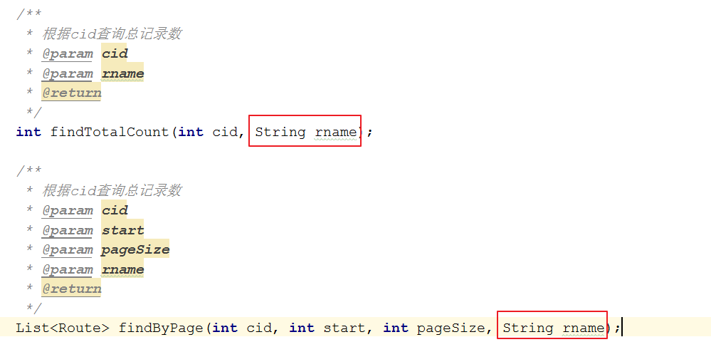
RouteDaoImpl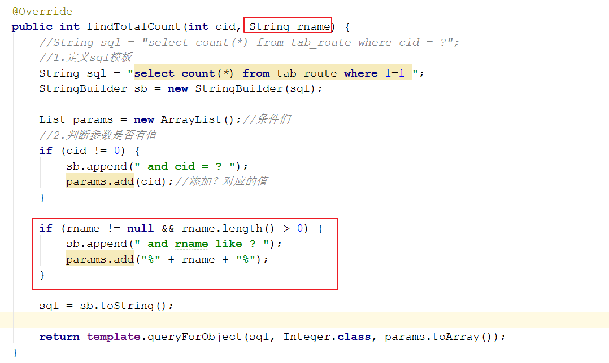
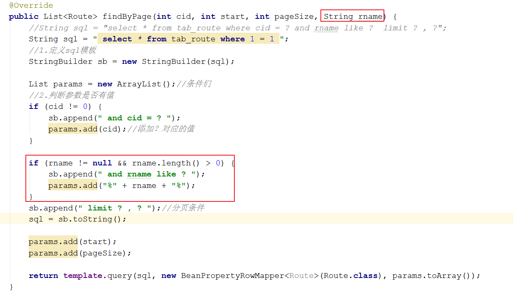
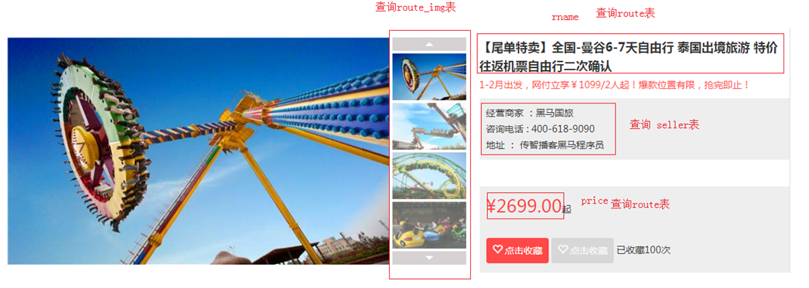
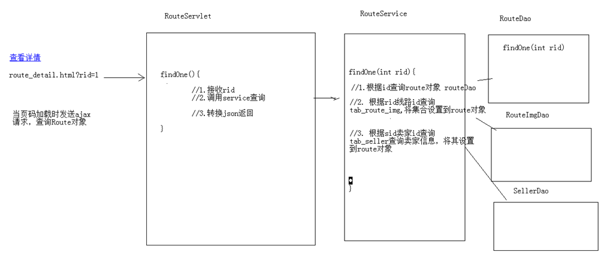
用户点击查看详情,传递线路id到详情页面
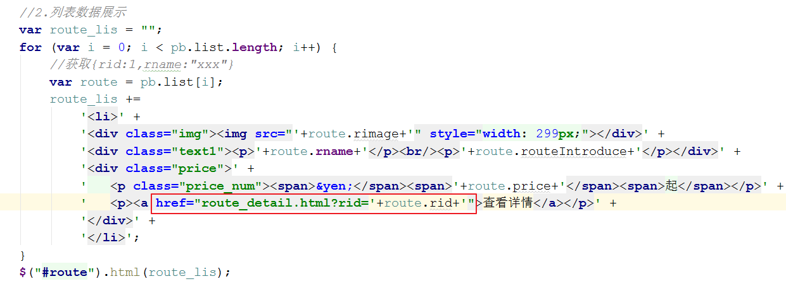
修改route_detail.html页面获取线路id,发送异步请求,查询详情数据
xxxxxxxxxx$(function(){ //1.获取rid var rid = getParameter("rid"); //2.发送请求请求 route/findOne var url = "route/findOne"; var params = {rid:rid}; $.get(url,params,function (route) { // 回调函数,展示数据 //商家信息展示 // 线路详情数据 //线路图片数据 });})编写Servlet , 接收用户请求,调用业务层处理数据
xxxxxxxxxx/** * 根据id查询一个旅游线路的详细信息 * @param request * @param response * @throws ServletException * @throws IOException */public void detail(HttpServletRequest request, HttpServletResponse response) throws ServletException, IOException { //1.接收id String rid = request.getParameter("rid"); //2.调用service查询route对象 Route route = routeService.findById(rid); //3.转为json写回客户端 writeValue(route,response);}xxxxxxxxxx/** * 根据线路ID查询线路详情 * @param rid * @return */Route findById(String rid);xxxxxxxxxxpublic Route findById(String rid) { //1.根据id去route表中查询route对象 Route route = routeDao.findById(Integer.parseInt(rid)); //2.根据route的id 查询图片集合信息 List<RouteImg> routeImgList = routeImgDao.findByRid(route.getRid()); //2.2将集合设置到route对象 route.setRouteImgList(routeImgList); //3.根据route的sid（商家id）查询商家对象 Seller seller = sellerDao.findById(route.getSid()); route.setSeller(seller); return route;}RouteDaoxxxxxxxxxx/** * 根据线路id查询线路详情 * @param rid * @return */ Route findById(int rid);RouteDaoImplxxxxxxxxxxpublic Route findById(int rid) { String sql = "select * from tab_route where rid = ?"; try { return template.queryForObject(sql,new BeanPropertyRowMapper<Route>(Route.class),rid); } catch (DataAccessException e) { e.printStackTrace(); return null ; }}RouteImgDaoxxxxxxxxxxpublic interface RouteImgDao { /** * 根据线路id查询线路图片 * @param rid * @return */ public List<RouteImg> findByRid(int rid);}RouteImgDaoImplxxxxxxxxxxpublic class RouteImgDaoImpl implements RouteImgDao { private JdbcTemplate template = new JdbcTemplate(JDBCUtils.getDataSource()); public List<RouteImg> findByRid(int rid) { String sql = "select * from tab_route_img where rid = ? "; return template.query(sql,new BeanPropertyRowMapper<RouteImg>(RouteImg.class),rid); }}SellerDaoxxxxxxxxxxpublic interface SellerDao { /** * 根据线路查询商家 * @param sid * @return */ Seller findById(int sid);}SellerDaoImplxxxxxxxxxxpublic class SellerDaoImpl implements SellerDao { private JdbcTemplate template = new JdbcTemplate(JDBCUtils.getDataSource()); public Seller findById(int id) { String sql = "select * from tab_seller where sid = ? "; return template.queryForObject(sql,new BeanPropertyRowMapper<Seller>(Seller.class),id); }}修改页面,为需要展示数据的标签添加id属性
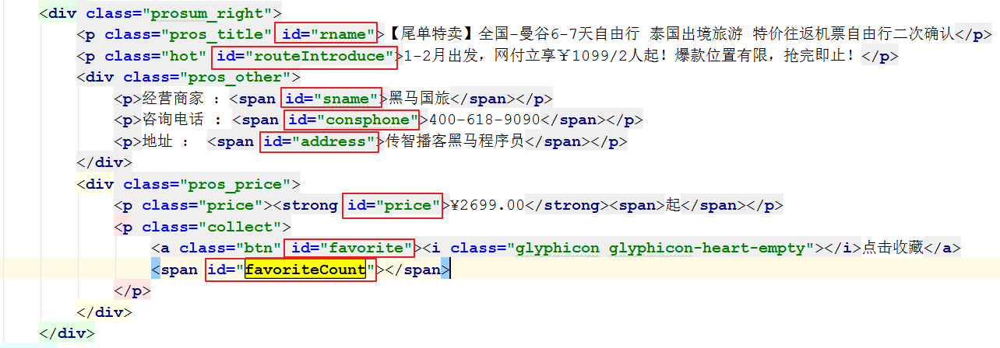
修改页面,在回调函数中展示数据
xxxxxxxxxx//1.获取rid var rid = getParameter("rid"); //2.发送请求请求 route/findOne var url = "/web20/route/findOne"; var params = {rid:rid}; $.get(url,params,function (route) { // 回调函数,展示数据 //--------------------------------------- //3.解析数据填充html $("#rname").html(route.rname); $("#routeIntroduce").html(route.routeIntroduce); $("#price").html("¥"+route.price); $("#sname").html(route.seller.sname); $("#consphone").html(route.seller.consphone); $("#address").html(route.seller.address); //图片展示 var ddstr = '<a class="up_img up_img_disable"></a>'; //遍历routeImgList for (var i = 0; i < route.routeImgList.length; i++) { var astr ; if(i >= 4){ astr = '<a title="" class="little_img" data-bigpic="'+route.routeImgList[i].bigPic+'" style="display:none;"> <img src="'+route.routeImgList[i].smallPic+'"> </a>'; }else{ astr = '<a title="" class="little_img" data-bigpic="'+route.routeImgList[i].bigPic+'"> <img src="'+route.routeImgList[i].smallPic+'"> </a>'; } ddstr += astr; } ddstr+='<a class="down_img down_img_disable" style="margin-bottom: 0;"></a>'; $("#dd").html(ddstr); $(".big_img").attr("src", $("#dd img:eq(0)").attr("src")); //图片展示和切换代码调用 goImg(); //------------------------------------------------------- });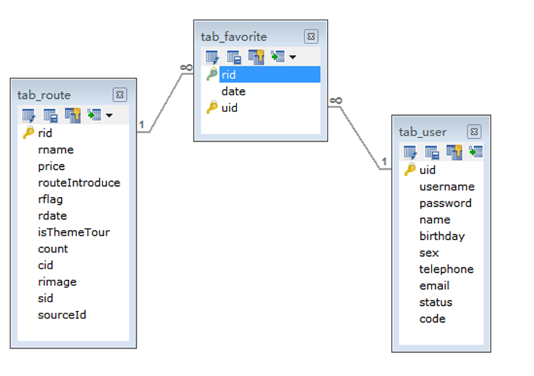
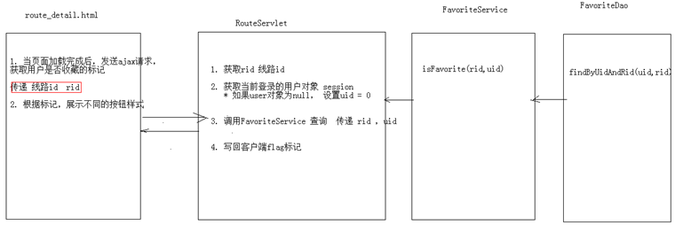
查询旅游线路详情
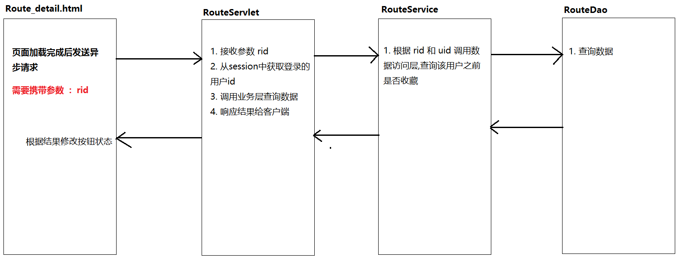
xxxxxxxxxx// 发送请求，判断用户是否收藏过该线路var rid = getParameter("rid");$.get("route/isFavorite",{rid:rid},function (data) { //处理返回结果 },'json');接收用户请求,调用业务层处理数据
xxxxxxxxxx/** * 判断当前登录用户是否收藏过该线路 * @param request * @param response * @throws ServletException * @throws IOException */public void isFavorite(HttpServletRequest request, HttpServletResponse response) throws ServletException, IOException { //1. 获取线路id String rid = request.getParameter("rid"); //2. 获取当前登录的用户 user User user = (User) request.getSession().getAttribute("user"); int uid;//用户id if (user == null) { //用户尚未登录 uid = 0; } else { //用户已经登录 uid = user.getUid(); } //3. 调用FavoriteService查询是否收藏 Favorite favorite = favoriteService.isFavorite(rid, uid); ResultInfo info = new ResultInfo(); if(favorite==null){ info.setFlag(true); //已收藏 }else{ info.setFlag(false); //未收藏 } //4. 写回客户端 writeValue(info, response);}FavoriteServicexxxxxxxxxxpublic interface FavoriteService { /** * 判断是否收藏 * @param rid * @param uid * @return */ public Favorite isFavorite(String rid, int uid);}FavoriteServiceImplxxxxxxxxxxpublic class FavoriteServiceImpl implements FavoriteService { private FavoriteDao favoriteDao = new FavoriteDaoImpl(); public Favorite isFavorite(String rid, int uid) { Favorite favorite = favoriteDao.findByRidAndUid(Integer.parseInt(rid), uid); return favorite ;//如果对象有值，则为true，反之，则为false }}FavoriteDaoxxxxxxxxxxpublic interface FavoriteDao { /** * 根据rid和uid查询收藏信息 * @param rid * @param uid * @return */ public Favorite findByRidAndUid(int rid, int uid);}FavoriteDaoImplxxxxxxxxxxpublic class FavoriteDaoImpl implements FavoriteDao { private JdbcTemplate template = new JdbcTemplate(JDBCUtils.getDataSource()); public Favorite findByRidAndUid(int rid, int uid) { Favorite favorite = null; try { String sql = " select * from tab_favorite where rid = ? and uid = ?"; favorite = template.queryForObject(sql, new BeanPropertyRowMapper<Favorite>(Favorite.class), rid, uid); } catch (DataAccessException e) { e.printStackTrace(); } return favorite; }}xxxxxxxxxx// 发送请求，判断用户是否收藏过该线路var rid = getParameter("rid");$.get("route/isFavorite",{rid:rid},function (data) { //回调函数中处理数据 //---------------------- if(data.flag){ // 用户已经收藏过 //<a class="btn already" disabled="disabled"> //设置收藏按钮的样式 $("#favorite").addClass("already"); $("#favorite").attr("disabled","disabled"); //删除按钮的点击事件 $("#favorite").off("click"); } //----------------------},'json');用户点击收藏,发送请求,完成收藏操作
xxxxxxxxxx//用户点击收藏按钮$("#addFavorite").click(function () { var rid = getParameter("rid"); //添加收藏功能 var url = "route/addFavorite"; var params = {rid: rid} ; $.get(url, params, function () { //处理返回结果 });});接收用户请求,调用业务层完成业务逻辑处理
xxxxxxxxxx/** * 添加收藏 * @param request * @param response * @throws ServletException * @throws IOException */public void addFavorite(HttpServletRequest request, HttpServletResponse response) throws ServletException, IOException { //1. 获取线路rid String rid = request.getParameter("rid"); ResultInfo info = new ResultInfo(); //2. 获取当前登录的用户 User user = (User) request.getSession().getAttribute("user"); if (user == null) { //用户尚未登录 info.setFlag(false); info.setErrorMsg("noLogin"); //4. 写回客户端 writeValue(info, response); return; } //3. 调用service添加 favoriteService.add(rid, user.getUid()); info.setFlag(true); writeValue(info, response); return;}FavoriteServicexxxxxxxxxx/** * 添加收藏 * @param rid * @param uid */void add(String rid, int uid);FavoriteServiceImplxxxxxxxxxxpublic void add(String rid, int uid) { favoriteDao.add(Integer.parseInt(rid),uid);}FavoriteDaoxxxxxxxxxx/** * 添加收藏 * @param i * @param uid */void add(int i, int uid);FavoriteDaoImplxxxxxxxxxxpublic void add(int rid, int uid) { String sql = "insert into tab_favorite values(?,?,?)"; template.update(sql,rid,new Date(),uid);}xxxxxxxxxx//用户点击收藏按钮$("#favorite").click(function () { var rid = getParameter("rid"); //添加收藏功能 var url = "route/addFavorite"; var params = {rid: rid}; $.get(url, params, function (data) { if(data.flag){ //代码刷新页面 location.reload(); return ; } if(data.errorMsg == "noLogin"){ alert("您还未登录,请先登录!!"); window.location.href = "login.html"; } }, "json");});